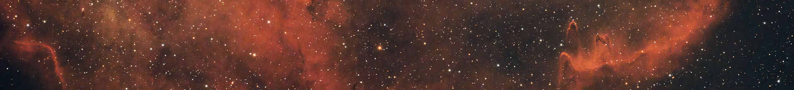
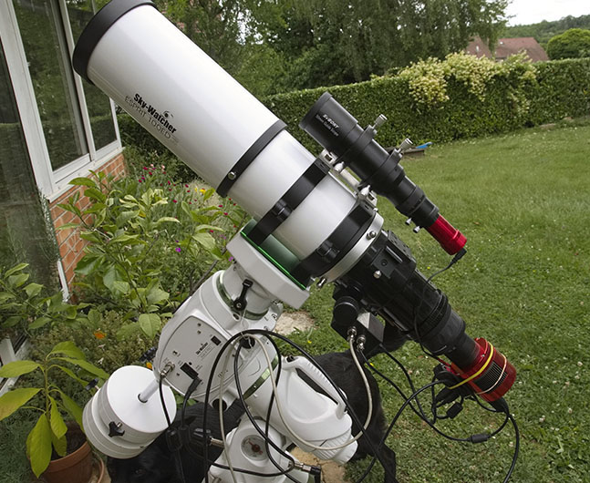

Dans le ciel profond, les signaux lumineux sont extrêmement faibles.
Même avec un télescope de grande taille, d'un diamètre de 300 à 400 mm, nos yeux ne parviennent pas à distinguer les couleurs des objets célestes !
Nos yeux peuvent être comparés à une caméra avec une exposition très rapide, d'environ 1/20 seconde (soit 0.05 seconde).
En astrophotographie, les séquences d'expositions durent au minimum une heure (3600 secondes), bien plus longtemps que ce que nos yeux peuvent percevoir en une fraction de seconde.
Le rapport entre ces deux temps nous donne une idée de la quantité de lumière capturée par l'appareil photographique par rapport à celle que nos yeux peuvent voir.
Ce rapport est donc de : 3600 / 0.05 = 72000
Pour observer la même scène en visuel qu'avec une photo prise sur un télescope de ⌀80 mm et une exposition de 3600 secondes, il faudrait un miroir de diamètre bien plus grand !
Ce diamètre serait :
\( 2 \times \sqrt{72000 \times 40 \times 40} = 21466 \, \text{mm} \) soit 21.4 mètres !!!
Cela montre l'énorme différence entre la capacité de nos yeux et celle des prises de vues photographiques en matière de collecte de lumière.
Mon lieu d'observation est mon jardin, situé en France dans le département du Jura sur la commune de Macornay.
Ce n'est malheureusement pas un site exceptionnel, la pollution lumineuse est moyenne avec une météo plutôt capricieuse.

Laissez votre message ici.